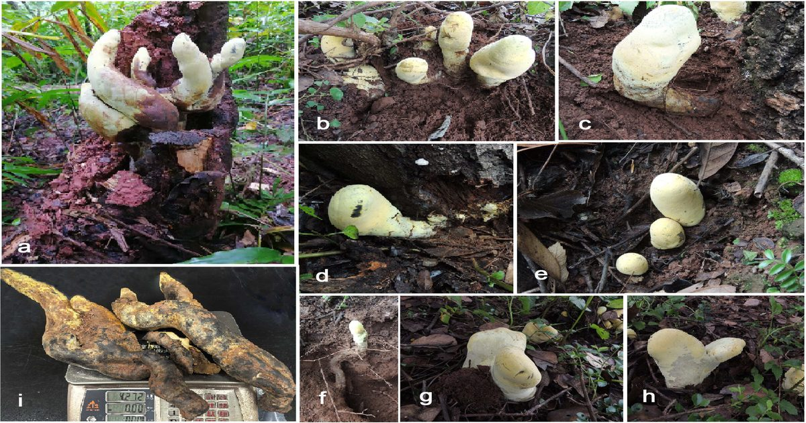

После гибели динозавров массивный гриб унаследовал леса
Познакомьтесь с D.
rex The post После гибели динозавров на Наутилусе впервые появился массивный гриб, унаследовавший леса.

Познакомьтесь с D.
rex The post После гибели динозавров на Наутилусе впервые появился массивный гриб, унаследовавший леса.